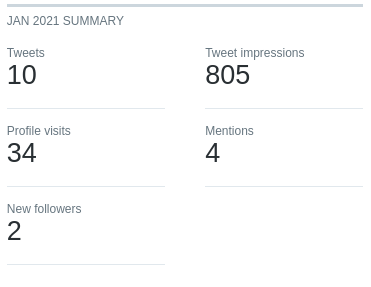

Feb 2021 Retrospective
Summary
Added a blog to mudmap but am still not ready to launch. 😞
Highlights
- Got the blog working at mudmap
- Backend code works as well but still has some quirks
Goal Performance
Each month I write up how I went in the pursuit of last month’s goals. It is also somewhere I can expand on the things I’ve done. Helpful for historical review and analysis.
Add a blog to Mudmap
- Appraisal: Happy that Wagtail is so easy to introduce and that the blog lives inside my app
- Rating: A
After looking around about how to deal with this I decieded on Wagtail.
It met my requirements:
- static rendering
- supports markdown and rich text
- hosting under my control
- routable within the application
Initially I considered a few options:
- Ghost
- Hugo
- Pelican
- Plain HTML
None of those were a great fit, I really wanted to use Hugo because its a brilliant product (this site is built on Hugo) but I just couldn’t get it to work how i wanted it to. In the end I chose Wagtail because its built for Django and I’ve used it before, so I don’t need to use up one of my precious innovation tokens.
In the end, its working and let’s me write in both markdown and rich text. It’s easy to make changes to the underlying HTML and CSS. It uses Jinja as the templating language and integrates seemlessly into the Django ecosystem.
My routing is simple but works exactly like a typical Django url and it is hosted on my infrastructure. Supports SEO optimization out of the box as well. Nothing is perfect but this seems pretty great so far. Only complaint is my shabby formatting and design!
Complete Mudmap’s backend PoC
- Appraisal: It works but there’s a lot of polish (and bugs) to iron out
- Rating: B
I am happy with the proof-of-concept. By month’s end the backend and dashboard could:
- Register a new device in the database
- Make the initial connection
- Install the API package
- Install a service account user
- Retrieve system information and display it in the dashboard
- Update a registered device, or delete it
Gain 5 Twitter followers
- Appraisal: I need to actually provide useful content to readers!
- Rating: F

In hindsight, its kind of a crap metric. I do believe in having an audience, hence why I am electing to publicise my work (good and bad). But, I don’t know that holding myself to a follower count improvement is a good goal. It should probably be the by-product of other goals such as write a long form blog post or some other value add for any readers.
Next months goals
- one
- two
- three goals
Recommendations
I really enjoy listening to Nick Janetakis' Running in Production podcast. In particular, I throughly enjoyed his interview with Justin from ButtonDown. It’s good advertising too because I pretty much immediately signed up for his service - I will always support the indie creator in favor of the big tech companies.
Otherwise, I watched a documentary on YouTube about animals returning to Chernobyl. I highly recommend it, family friendly too - it’s like milo and otis for those that have now grown up!
Wildlife Takeover: How Animals Reclaimed Chernobyl
Wrap up
What can I do better?
- If I am going to publish things to twitter, make sure they’re actually of value to any readers
What have I done well?
- Used my previous experience with a product (Wagtail) to make a quick integration instead of pursuing the traditional developer move of trying something new